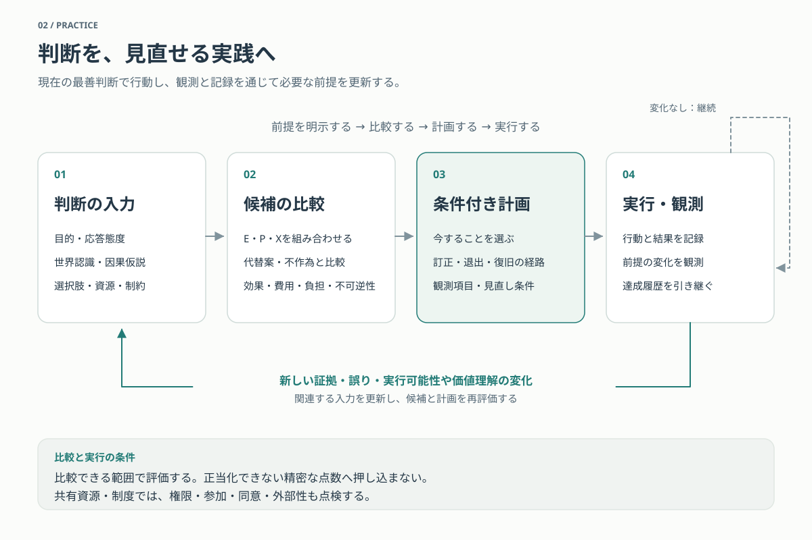

実践――では、いま何をするのか
価値について絶対的な基礎を持たないことは、行動停止を意味しない。現在の証拠と推論に照らして支持できる目的を実行しながら、よりよい理由や証拠によって判断を訂正できる条件も考慮する。本稿は、その姿勢を、配分、日常の実践、AIをめぐる方策へ具体化する。
ここには、主体側の態度から導かれる条件付きの原則、制度や技術についての経験的前提、執筆者個人の暫定判断が含まれる。本文では、条件付きの一般的な実践論と、特定の個人の配分を前提としない方策例を扱う。執筆者個人の数値配分・世界認識・AI方策は、末尾の折りたたみにまとめる。同じCoreを受け入れても、配分や世界認識が異なれば、具体策について異なる結論を採りうる。
1. 出発点と、このページの役割
以下は、Coreでいう主体側の橋を持つ場合の実践方針である。その橋には、「自分の目的がよりよく正当化されるなら、それに応じて選択や目的を改訂したい」という条件付き応答性や、「よりよく知らされた自分が明白な誤りと評価する不可逆的選択を避けたい」という反省的誤り回避がありうる。
価値不確実性だけから、探索や保存の義務が自動的に生じるとは主張しない。また、出発点となる主体は、客観的な価値の実在を確定していない。誤謬論の下でも、現在の選好、他者への関心、協力や合意に基づく実践は残りうる。
本稿では、何を信じ、何を実現したいかという認識と応答態度から、世界についての見通し、実行可能な選択肢、費用と危険を加えて、現在の方策へ進む。理論的な根拠は意思決定論的方針、E/P/Xの区別は未決着下の探索配分、集約モデルの形式と限界は主体側の応答に基づく反省的集約で扱う。

図の内容を文章で読む
目的と応答態度、世界認識と因果仮説、選択肢・資源・制約を入力とする。E・P・Xを組み合わせた候補を、代替案と不作為の効果、費用、負担、不可逆性に照らして比較する。
計画には今すること、訂正・退出・復旧の経路、観測項目、見直し条件を含める。実行して結果を記録し、前提の変化を観測する。
関連する新しい証拠、誤り、実行可能性や価値理解の変化があれば入力を更新して比較・計画に戻る。なければ履歴を引き継いで継続する。達成済みの便益を新規の便益として数え直さない。
矢印は手続きであり論理的含意ではない。比較・数値化には正当化できる範囲を用い、共有資源では権限・参加・同意・外部性も点検する。
2. 現在の最善判断に従い、不可逆な閉鎖には追加の理由を求める
確実性を待たずに行動する
物理世界、他者、科学的知見、現在の倫理的判断が最善説明として十分に支持されるなら、それに応じて強く行動してよい。可謬性は、すべての判断を弱く扱う理由ではない。
ただし、現在の高い確信度だけから、その判断を将来再検討不能にしてよいとは導かれない。現在の行為へのコミットメントと、未来の訂正経路を閉じることを区別する。
訂正可能性を残す費用を、失う費用と比較する
主体が訂正への橋を持ち、将来の認識改善が選択を変える可能性があり、主要な成果を損なわずに訂正経路を低い追加費用で残せるなら、その経路を残す理由がある。段階導入、再評価、記録、独立監査、ロールバックなどが候補になる。
これは可逆性を無条件に最大化する原則ではない。保存や延期の費用が大きい場合もあり、何もしない間に失われる生命、機会、情報、選択肢もある。行為と不作為の双方を比較する。
未知の可能性を、架空の要求へ変換しない
まだ内容を表象できない価値の可能性に、巨大な効用や拒否権を与えて現在の行為を決めない。その可能性は主として、調べる能力、原データ、仮説を生成する能力、将来の再検討可能性へ反映する。
今は調べないこと、暫定的な計画を実行すること、問いを解決済みとして終端的に閉じることは異なる。最後の判断に必要な条件は、価値探索の停止条件で扱う。
3. E/P/Xを、一つの訂正可能な計画へまとめる
| 機能 | 本稿での意味 |
|---|---|
| E：能動探索 | 現在の目的や方策の正当化に関係する情報・概念・証拠を、今取りに行く |
| P：探索可能性保存 | 後で調べ、判断を変更し、その変更を実行できる条件を残す |
| X：現在の実践 | 現在の目的、選好、価値判断に基づいて行動する |
これらは、すべての行為を排他的に分類する三つの箱ではない。医療研究は知識を増やし、活動能力を支え、現在の苦痛を減らしうる。同じ活動の複数の機能を認めながら、資源の支出を重複して数えない。
配分は、情報の判断関連性、探索機会の代替不能性、危険、保存費用、現在の実践を見送る機会費用に応じて変わる。能動探索が高価または危険でも、探索可能性だけは比較的安く保存できるなら、Eを抑えてPを維持し、Xを進める選択もある。
十分な比較可能性がある局面では、各仮説の下で承認する実践基準を認識的支持に応じて統合し、実行可能な計画を比較する。世界の不確実性には条件付き期待評価を使いうるが、行動を抽選することとは異なる。数値の精密さや理論間比較を正当化できない部分まで、単一の点数へ押し込まない。
認識的な重みは、各理論の自己保存や交渉によって決まるものではない。証拠と推論によって更新する。また、理論の重みが小さくても、その中心的な要求を他の要求への小さな損失で満たせるなら、計画を変える理由になりうる。ただし、少数要求が必ず実現される保証は、配分比率だけからは出ない。
計画には、現在の行動だけでなく、どの情報を得て、どの条件で方針を見直すかを含める。前提と評価が変わらなければ、履歴や充足状態を初期化して同じ改善を何度も新規の便益として数え直さない。新しい証拠、誤りの発見、実行可能性や価値理解の変化があれば、その理由に応じて再検討する。
個人の評価モデルで計画を選べることは、その計画を他者に強制できることを意味しない。共有資源や制度については、権限、参加、同意、外部性を別途扱う。
4. 各立場から特に優先されうる方策
次の例は、執筆者個人の配分を前提とせず、各立場からどのような方策が支持されうるかを示す。すべての立場を採用すべきだという主張でも、普遍的な順位でもない。各立場の内部にも解釈の幅があり、現在の未充足と実行可能性によって優先度は変わる。
| 立場 | 方策例 |
|---|---|
| E：能動探索 | ①価値・主体・規範理由の重要な未解決問題を調べる。②方策の選択を変えうる技術・制度・福利の経験的研究を進める。③独立検証・反論・再現を通じて、仮説を識別する方法を改善する。 |
| P：探索可能性保存 | ①探索主体・生存基盤・代替困難な情報の不可逆的喪失を防ぐ。②独立して研究・実践・退出できる人材と基盤を残す。③段階導入・記録・復旧・権限変更を通じて、現在の判断を訂正できる構造を作る。 |
| 選好・関心に基づく実践 | 一般的に見られる選好の例として、①生存・健康・生活の安定を確保する。②家族・友人等との関係や配慮を実現する。③仕事・創作・学習・遊びなど、自分で選ぶ活動の自由と手段を得る。個人によって内容と順位は異なる。 |
| 主体の存在を条件とする福利重視 | ①深刻な苦痛・疾病・困窮を予防し軽減する。②現在および将来に生きる主体が、よい生を送れる条件を整える。 |
| 契約主義 | 制度や政策の負担を当事者に正当化できるようにし、特に交渉力の弱い人への重大な負担と、その是正経路を点検する。 |
| 義務論 | 同意、約束、欺瞞や強制への制約など、採用する権利・義務を制度と実務へ反映する。 |
| 総量功利主義 | 多数の主体・長期間・新たなよい生の可能性を含め、期待される福利総量の改善が大きい方策を優先する。 |
| 徳倫理 | 教育・模範・習慣・組織文化を通じ、誠実さ、思慮、勇気、配慮など、よく判断し行動する性向を育てる。 |
この一覧は網羅的ではない。例えば、生態系の健全性それ自体を重視する立場なら、生息地の保全・回復が候補になる。どの立場をどの程度支持するかは、方策例を示すこととは別に判断する。
ここでいう「主体の存在を条件とする福利重視」は「現在の人だけを重視する」という意味ではない。将来生きる主体の福利も配慮しながら、福利を追加するために受益主体を新たに作ること自体を独立の要求としない立場である。出生やAI主体の作成を禁止する意味ではなく、関係形成や探究など、別の理由による支持は残る。対象となる主体、福利の内容、人口が変わる選択間の比較には未解決の論点がある。詳しくは功利主義と福利を参照する。
複数の立場から支持されうる五つの実践
| 方策例 | 重なる支持理由と成立条件 |
|---|---|
| 日常の協力を誠実に果たし、失敗を修復する | 関係を望む選好、相互性、約束、誠実さから支持されうる。失敗の共有や共同検証を実際に可能にするなら、E/Pへの寄与もある。 |
| 医療・ケア・生活上の障害を軽減する | 福利、本人と他者の選好、公正な負担配分から支持されうる。活動・学習・参加を支える効果もあるが、探索への貢献は支援を受ける資格ではない。 |
| 教育・知識共有・技能継承を支える | Eの認識改善、Pの能力継承、学習や自己実現の選好、判断力の形成を支える。情報へのアクセスと、利用・検証できる能力の両方を見る。 |
| 有用な設備・制度・技術を保守し、引継ぎと移行を可能にする | 現在の生活上の便益、負担軽減、責任に加えて、Pの継続性・復旧・退出を支える。維持費と、よりよい代替へ移る可能性も比較する。 |
| 便益のある技術を、検証・段階導入・独立監査とともに実用化する | Eの学習、Pの損失抑制、Xの福利や目的実現が重なりうる。AIも対象になるが、速度と公開範囲は具体的な危険と権力配置を加えて判断する。 |
信頼は無批判な服従ではなく、信頼に値する遂行と、検証・異議・修復が可能な関係として育てる。異論を言えない結束はE/Pを損なう場合がある。
支持理由の数だけでは優先度は決まらない。それぞれの効果の大きさ、確からしさ、費用を比較する。また、普通の生活をすべて探索への貢献として正当化する必要はない。関係、遊び、創作、ケアはXとして直接に承認でき、E/Pへの効果がある場合に追加して考慮できる。
5. 実践指針を、成立条件とともに使う
人類の探索能力を維持し、改善機会に応じて拡張する
現在確認できる人類文明は、世代を越えて問い、知識、文化を蓄積する大規模な探索ネットワークである。その代替困難性と、失った場合の損失を現在重く評価するため、研究能力とその基盤を維持する理由がある。
科学だけでなく哲学、歴史、社会科学、芸術、異文化理解、意識研究なども、将来の価値理解に関係する可能性がある。ただし、維持から無条件の拡張は導かれない。追加投資が生む判断改善と、その費用・危険を別に評価する。人間の生活を守る理由も、その探索上の有用性だけではない。
開かれた安定と、実効的な独立性を支える
研究と記憶の継続には一定の安定が、誤り訂正には批判・退出・新規参入・分岐が役立つ、という経験的前提の下で、両者を併せ持つ制度を支持する。
多様性はそれ自体を絶対的な目的にしない。複数系統が重要な誤りの相関を減らし、その便益が維持費や外部性に見合うなら、独立した研究機関、異なる方法、複数の技術基盤を残す理由がある。異なる意見があるだけでは不十分な場合があり、研究・実験・退出を実行できる資源と権限も見る。
この因果仮説の詳細は、政治的主体性の物質的基盤と政治的冗長化で検討する。
人間・生態系・文化・原データを、その代替困難性に応じて保存する
何が将来の価値・意識理解に関係するかを現在確定できない以上、現在の理論だけで圧縮・廃棄すると、再検討に必要な情報を失う場合がある。原データ、資料、生態系などには、その独自性と再取得可能性に応じた保存理由がある。
保存を絶対化して宇宙を博物館にする必要はない。保存費用、現在主体への負担、複製・代替可能性を比較する。人間を情報源として扱うこの理由は、本人の福利・選好・権利についての評価に取って代わらない。詳しくは未知の未知と原データ保存で扱う。
知的・技術的進歩を、探索と生活を改善する手段として進める
科学、計算、観測、AI、生命科学、宇宙研究などが、現在の目的と認識改善へ役立つなら進める理由がある。一方、能力増大が理解・制度・防御・訂正能力を追い越し、失敗や支配を不可逆にするなら、速度や方向を変える理由が生じる。
進歩の有無だけでなく、何の能力を先に増やすかを選ぶ。防御、検証、保守、独立した基盤の改善が、別の能力の安全な利用範囲を広げる場合もある。
6. 福利を、低い機会費用で実現できる場合
福利には、規範的に重要である可能性、主体が直接に望むこと、協力上のコミットメント、探索を支える効果など、異なる支持理由がある。福利改善への支持を、功利主義や福利中心の立場からの支持だけへ限定しない。
重要な要求を、他の要求と訂正可能性への小さな損失で満たせる実行可能な計画があるなら、その改善を組み込む理由がある。「低コスト」とは、宇宙的な未来に比べて小さな割合というだけではない。代替計画と比較した資源、遅延、危険、維持費、失われる選択肢を含む。改善を見送る損失も比較する。
受益主体を追加し続ける要求がないこと、個々の要求に充足点があること、その達成・維持が安いことは、三つの別の主張である。現在主体の選好でも無制限の寿命や資源を求めることはあり、対象を限定しただけで要求全体が有限費用で終わるとは限らない。
疾病の治療など、充足を記述できる要求については、その達成履歴を引き継ぐ。同じ治療成果を繰り返し新しい便益として計上しない一方、生活・治療・制度の継続、新しい主体の要求に必要な費用は含める。
充足後に変わるのは追加投資の寄与であり、その立場への認識的支持ではない。未来の知性が現在への譲歩を承認するはずだと先取りしたり、その立場を将来の判断から退場させたりする必要はない。
7. 同じ評価でも、世界認識によって方策は変わる
配分と応答基準だけでは具体策は決まらない。異なる因果関係や実行可能性を見込むなら、同じ目的を持っていても推奨方策は変わりうる。AIを例に、方策を分ける経験的前提を示す。この比較表は、いずれの見通しが正しいかを確定するものではない。
| 検討する前提 | 方策への含意 |
|---|---|
| 必要な安全性と検証を、能力の展開に間に合う形で確保できるか | できるなら早い利用を支持しやすい。能力向上が準備を追い越すなら、危険な展開を抑える理由がある |
| AIの集中が、他者への依存と実効的な訂正経路を失わせるか | 強い集中効果が見込まれるほど、独立基盤と退出を早く確保する理由が強まる |
| 公開・分散が独立した実践能力を増やすか、破壊能力を拡散するか | 監査・防御・参入への効果と、誤用・競争・不可逆性を比較して公開形態を選ぶ |
| 防御・区画化・復旧が、単一の失敗の波及を抑えられるか | 有効なら開放と安全を両立できる範囲が広がる。困難なら能力や行為への制約が必要になる |
アライメントを実現できるという見通しは、この表の第一の前提を具体化する一例である。楽観的な見通しを採ること自体は、一般的な実践原則からは導かれない。いずれ解けるという見通しと、必要な時点までに検証できるという見通しも別である。
特定の所有者や統治者への忠実性が高まっても、誰に決定権を与えるかという問題は残る。制御可能なAIが少数主体の権力を強化する可能性は、アライメントの失敗とは別に評価する。また、制御可能性だけでは、意図的な誤用や競争による外部性を防げない。
決定権は、誰を正当な指示主体に選ぶかだけでなく、その配置を後から誰が変更できるかという問題でもある。軍事・生産・行政を維持するために誰の協力が必要か、それが交渉力と権利にどう関係するかは、政治的主体性の物質的基盤で歴史的な作業仮説として扱う。AIによる依存低下と権力固定への接続は、「無用者階級」の本当のリスク――政治的冗長化を参照する。これらは、技術から一つの政治秩序が必然的に生じるという主張ではない。
人類滅亡の損失も一つの数に先立って分ける。現在主体の死と失われる生、文化・探索経路の喪失、未実現の将来福利は、支持する理由が異なる。総量功利を100%採らないことから、滅亡の損失を機械的に数割引きにはしない。生物学的存続と探索経路の存続の区別は探索的絶滅で扱う。後継者が探索を続けても、現在主体の死による損失が消えるわけではない。
8. 実行し、記録し、前提に応じて更新する
具体的な方策では、次を短く記録する。
- どの目的・実践基準が、その方策を支持するか。
- どの世界認識と因果関係を前提にしているか。
- 代替案、不作為、維持費、他者への負担と何を比較したか。
- 何を観測し、どの変化で再評価するか。
個人は、現在の生活と目的を進めながら、反対意見を読める状態と思考の履歴を残す。研究共同体は、再現・異説・長期記録と実効的な独立性を支える。制度は、安全と継続性に加えて、批判・退出・修復を可能にする。AIは答えの権威としてではなく、検索、比較、反論、自己批判の補助としても使う。
研究、自由、多様性、保存、人類存続、AI自律、技術進歩のいずれも、本稿だけで自動的な究極価値になるわけではない。同じ配分でも世界認識が変われば方策が変わり、認識的支持や応答態度が変われば配分も変わる。このページ自身も、その訂正の対象に含まれる。
執筆者個人の暫定的ポジション――配分・世界認識・AI方策
以下は執筆者個人の現在の認識的支持、応答態度、技術予測、政治的選好、危険評価を重ねた適用例である。本文の一般的な方策例とは地位が異なり、Coreから一意に導かれた結論ではない。同じCoreを受け入れても、以下の配分や政策を採用する必要はない。
暫定配分――方策を考えるための簡略モデル
数値化は、この実践方針に不可欠ではない。立場を数値や文章へ写し取ることには限界がある。以下は厳密に測定された確信度や、理論から一意に導かれた配分ではなく、執筆者の現在の立場から方策を例示するための暫定的な簡略モデルである。
E25 / P25 / X50
| E | P | X |
|---|---|---|
| 25% | 25% | 50% |
この比率は、対象となる計画において配分を検討できる資源への初期的な目安である。全社会への予算命令でも、毎日の時間を機械的に区切る規則でもない。具体的な計画で使うときは、資源の種類、対象、期間、既存の義務を明示する。複数機能を持つ支出の会計上の配賦と、その効果の評価も区別する。
世界認識や機会費用が変われば、この目安自体も変える。目的の正当化に関係する重要な発見が見込まれるならE、失われかけている訂正経路があるならP、現在の深刻な未充足を改善できるならXを増やす理由が生じうる。
X内部の実践基準
| 立場・応答 | 近似的な重み |
|---|---|
| 誤謬論の下での選好・関心・協力に基づく実践 | 40% |
| 主体の存在を条件とする福利重視 | 20% |
| 契約主義的な相互正当化 | 10% |
| 義務論的な権利・義務の尊重 | 10% |
| 総量功利主義 | 5% |
| 徳倫理 | 5% |
| その他の表象可能な立場 | 10% |
こちらは、認識的支持に基づいて各仮説の下で承認する応答を評価へ反映するための近似的な重みであり、資源配分率ではない。例えば、Xの50%と選好に基づく実践の40%を掛けて、総資源の20%を専用枠として確保するわけではない。
表は同一階層の排他的な学説の真理確率を列挙したものではない。メタ倫理的仮説と、その下での実践的応答を簡略に表示している。厳密な計算には、仮説間の関係、重複、内部の評価尺度を定める必要がある。理由の名称を増やしたり、同じ仮説を分割したりしただけで重みを増やさない。
誤謬論から、利己主義や特定の協力規則が演繹されるわけではない。40%の欄は、その仮説の下でも主体が承認する目的を直接に追う応答を含む。利他的な関心や合意に基づく実践もありうる。契約主義の欄は、それとは別に、当事者に対する規範的な正当化を重視する応答である。
福利重視の20%には、本文でいう「主体の存在を条件とする福利重視」を置く。将来生きる主体への配慮と、受益主体を新たに作る理由を区別する。
「その他」は表象可能な評価基準のための欄であり、未概念化価値の架空の評価者ではない。内容を指定しないまま、その10%を結論に都合よく使わない。この表だけでは、完全な数値的政策評価はできない。
現在の世界認識からAI方策へ
現在は、AIによる科学・生活・探索能力の改善に大きな可能性を見込む一方、能力の恒久集中が他者の交渉力と訂正可能性を失わせる危険を重く見る。この見通しから、必要な安全性を確保した開発、独立した能力の分散、反省的な後継者、複数主体の共存を支持する。安全性の確保や分散の実現可能性について、ここでは確定的な成功確率を置かない。
特に、誰の指示へAIを従わせるかと、その決定権を後から訂正できるかを一体で考える。この判断の背景にある歴史・権力論は、政治的主体性の物質的基盤と政治的冗長化で検討している。これらの因果仮説の支持が変われば、以下の方策も再検討する。
必要な安全性を確保しつつ、十分に速く進める
AI能力の改善には、科学、認識、価値探索、疾病・老化・物質的制約の克服への大きな可能性があると現在評価する。そのため、壊滅的・不可逆的な失敗を避けるために必要な評価、監査、制御を確保した上では、十分に速い開発と利用を支持する。
速度自体は目的ではない。安全性が実質的に崩れる局面では減速し、安全・防御・検証を先行させる理由がある。一方、無期限の凍結が現在の改善機会や独立した選択肢を失わせる危険も比較する。
見直し条件： 能力の危険が評価や防御を追い越す証拠、検証手法の信頼性の不足、便益の過大評価、より安全に同じ便益を得られる代替が示された場合には、速度・対象・展開範囲を変える。
独立した能力を分散し、公開形態を選ぶ
少数の企業・国家・ラボが能力、研究手段、アクセス政策を恒久的に独占することには、訂正困難な権力・価値固定の危険があると現在評価する。安全上許容できる範囲ではopen weightsを有力な手段として支持し、困難な場合にも広いアクセス、独立監査、相互運用、移行・分岐の手段を重視する。
weightsの公開だけで実効的な独立性が完成するわけではない。計算資源、電力、人材、供給網、運用権限への依存も見る。提供者が撤回できるアクセスと、独立運用できる能力は異なる。一方、公開そのものは取り消せない場合があり、その後の制約変更や危険能力の拡散も評価する。
見直し条件： 公開が独立性よりも破壊能力や再集中を強く増やす場合には、段階公開、能力別の制約、管理された利用などへ切り替える。同時に、制約を運用する主体の権力と訂正経路を検証する。
探索的後継者たりうるAIを育てる
現在の人間価値を永久固定する装置だけを目指さず、世界・自己・価値について証拠を得て、判断を再検討できるAIを重視する。目標形成過程の理解、目的と規範的理由の区別、自己批判、異なる主体からの学習、外部からの検証を研究する。
認識上の検討能力があることと、共有世界を不可逆に変更する権限があることは別である。短期の強い行為制約と、将来の反省的自律を段階的に接続する。「探索せよ」を新しい永久目標にもしない。
見直し条件： 表面的な自己批判が検証に耐えない場合や、自律の拡大が他主体の訂正可能性を損なう場合は、権限拡大を見直す。成熟を能力の高さや経過年数だけで認定しない。詳細はアライメントと価値ロックインで扱う。
ASI移行後にも、複数主体が共存できる秩序を残す
長期的成功を、人間がASIを永久に制御することだけで定義しない。人間と将来の異なる主体が、思考・批判・結社・退出・分岐を行える秩序を重視する。ただし、他者に不可逆な危害を与える無制約な能力とは区別する。
この方策には、監査だけでなく、独立した生産・通信・防御・復旧の基盤も関係する。複数主体の存在と安全を両立する物質的条件を調べ、その条件を作る投資も検討する。詳細はASI能力拡散と文明レジリエンスで扱う。
見直し条件： 分散が制御困難な軍拡や不可逆的外部性を増やすなら、共通制約や協調を強める。その制約自身の監査、変更、異議申立てを可能にする。独立した検討が十分な根拠で収束することまで、複数性それ自体を理由に拒まない。